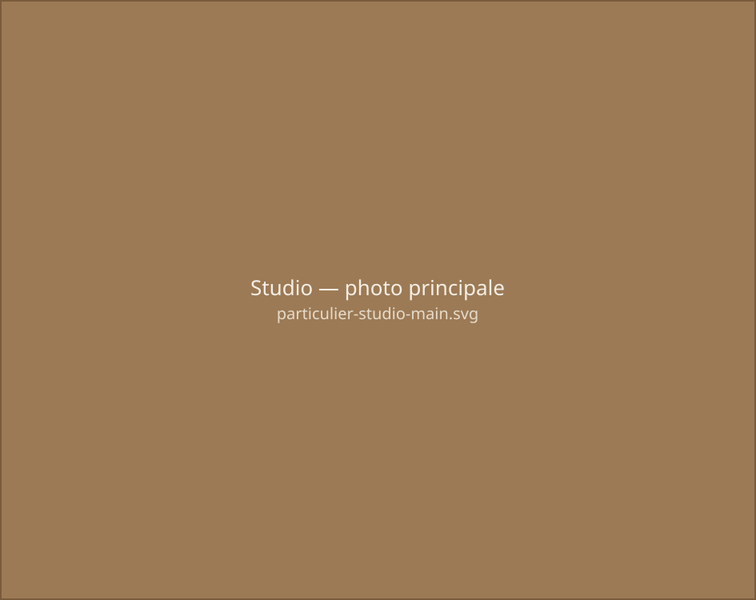
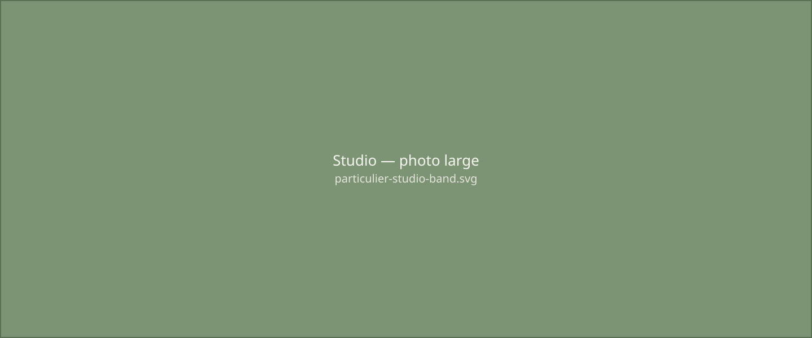
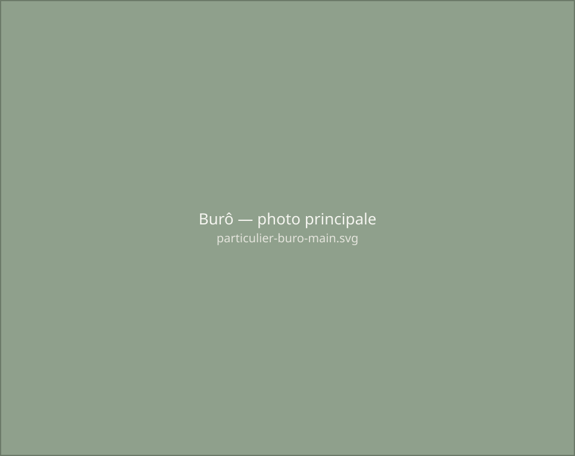
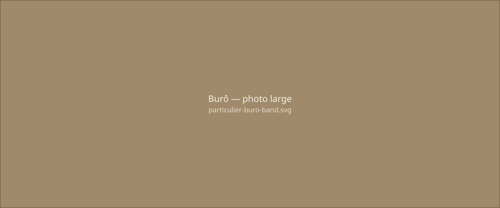
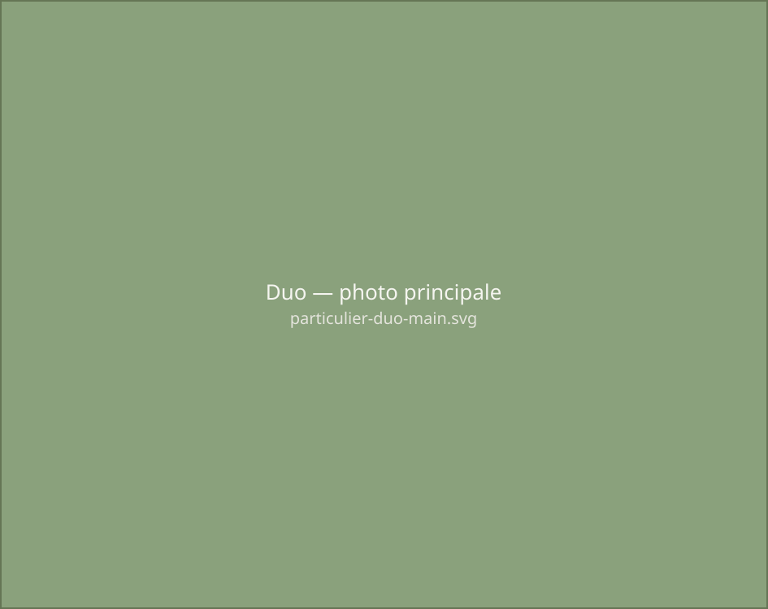
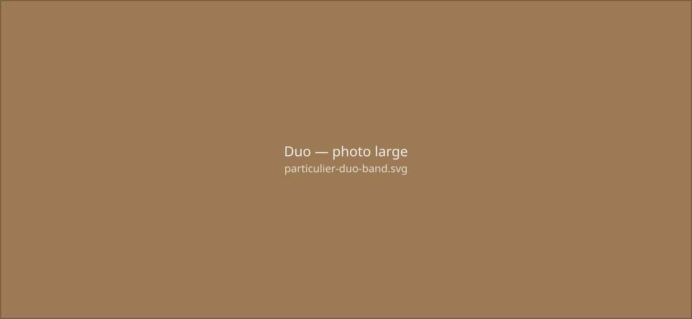

Le Mô Dulo Duo Studio (20 m²) est un espace indépendant complémentaire à la maison principale. Adapté à un couple, avec couchage d'appoint pour enfants.
En quête d'une maison avec trois chambres, elle ne trouve que des volumes standardisés, sans âme. Ancienne habitante d'un habitat partagé écologique, elle rêve d'un lieu en lien avec la nature. La découverte du MôDulo change tout. Elle choisit de réduire sa maison principale et d'ajouter un MôDulo Studio autonome : une chambre indépendante avec salle d'eau, compacte et lumineuse, ouverte sur la forêt. Sur son terrain de 500 m² à Saint-Nicolas-de-Redon, le bois et la lumière dialoguent avec le paysage. Préfabriqué en atelier puis assemblé sans terrassement, le MôDulo limite l'impact du chantier.
Localisation : Saint Nicolas de Redon 44

Salon avec un canapé convertible, chambre, salle d'eau, WC.
Module en Douglas et pin, laine de coton, contreplaqué de frênes pour les aménagements. Fenêtre double vitrage sur châssis aluminium.
Convecteur électrique à fluide caloporteur et chauffe-eau instantané.
Étude : 4 mois — Travaux : 3 mois — Livraison : 2025 — Surface : 20 m² — Budget : 76 000 € TTC

Le Mô Dulo Büro (16 m²) est un espace professionnel indépendant, pensé pour le travail et la réception.
Au départ, son activité se déroulait dans un bureau loué, étroit et peu pratique. Elle rêvait d'un lieu professionnel différent : un bureau lumineux, spacieux, proche de sa maison. Avec Mô Dulo, elle découvre une solution élégante : un chalet bois modulaire, posé sans terrassement, au fond du jardin. Ses formes arrondies et son architecture organique s'intègrent naturellement dans le paysage. À l'intérieur, la façade vitrée panoramique ouvre sur la campagne. L'espace tout bois, isolé en laine de bois, devient un cocon écologique. Chaque détail est optimisé : une bibliothèque sert de cloison et intègre discrètement les sanitaires.
Localisation : Secteur de Pontchâteau

Espace bureau et réception, bibliothèque/cloison, toilette.
Module en Douglas et pin, laine de coton, contreplaqué de frênes pour les aménagements. Fenêtre double vitrage sur châssis aluminium.
Convecteur électrique à fluide caloporteur et chauffe-eau instantané.
Étude : 4 mois — Travaux : 6 mois — Livraison : 2025 — Surface : 16 m² — Budget : 60 000 € TTC (TVA 20%)

Le Mô Dulo Duo (50 m²) associe deux modules de 25 m² reliés par un sas, créant une continuité fluide entre les espaces.
À 68 ans, il choisit de tourner une page. Quitter la ville, se rapprocher de ses enfants, trouver un coin de campagne à l'écart du bruit. Avec une idée claire : alléger sa vie et ne garder que l'essentiel. La rencontre avec le Mô Dulo est décisive. Un habitat en bois, aux lignes organiques et à la lumière apaisante. Ensemble, nous dessinons un Duo sur mesure : grande cuisine ouverte, salon traversant, chambre calme, salle de bain optimisée, un coin lecture face au sud. Construit en atelier, installé sans terrassement, le Mô Dulo limite son empreinte sur le terrain. Posé sur pilotis, il s'ancre dans le paysage sans le contraindre. À La Gacilly, en Bretagne sud, son terrain de 1 000 m² en pente douce accueillera cette nouvelle maison. Un habitat compact, durable, personnel.
Localisation : Saint Nicolas de Redon 44

Cuisine équipée, salle à manger, salon, chambre, salle d'eau, atelier de peinture. Extension : garage à vélos et buanderie.
Module en Douglas et pin, laine de coton, contreplaqué de frênes pour les aménagements. Fenêtre double vitrage sur châssis aluminium.
Convecteur électrique à fluide caloporteur et chauffe-eau instantané.
Étude : 4 mois — Travaux : 3 mois — Livraison : 2025 — Surface : 20 m² — Budget : 76 000 € TTC (TVA 20%)